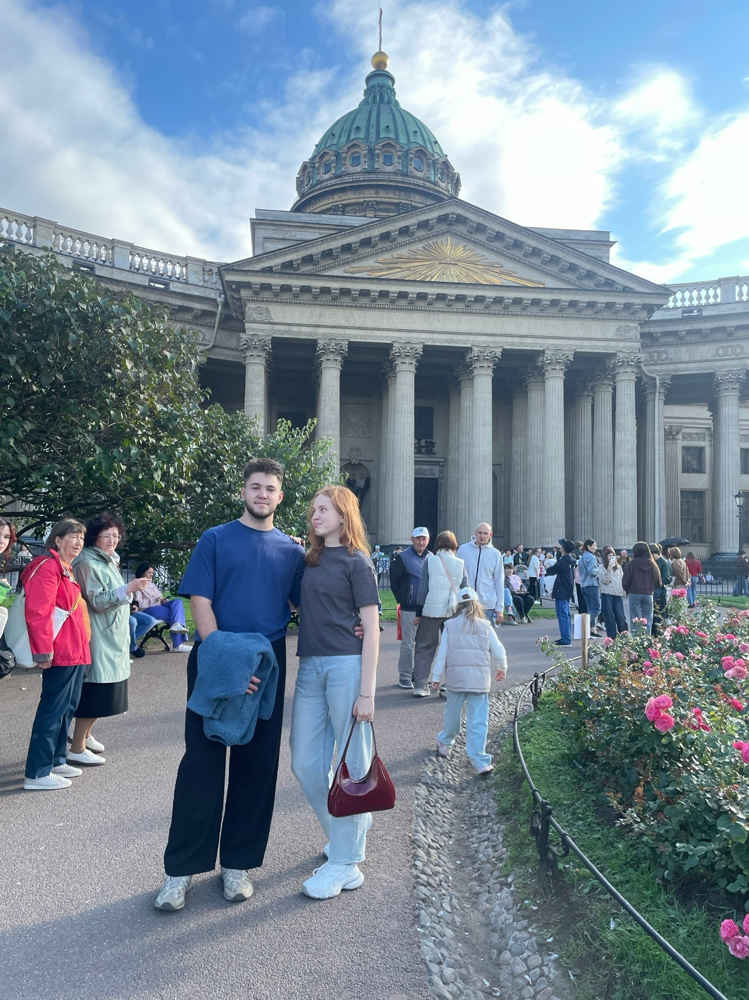
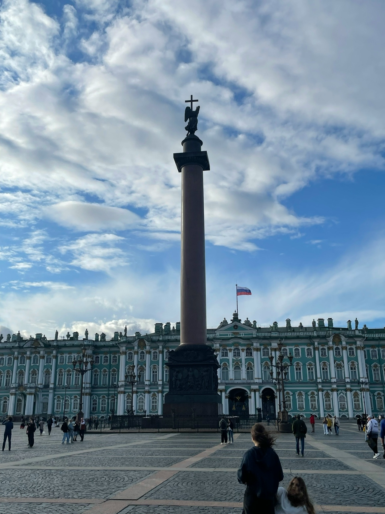
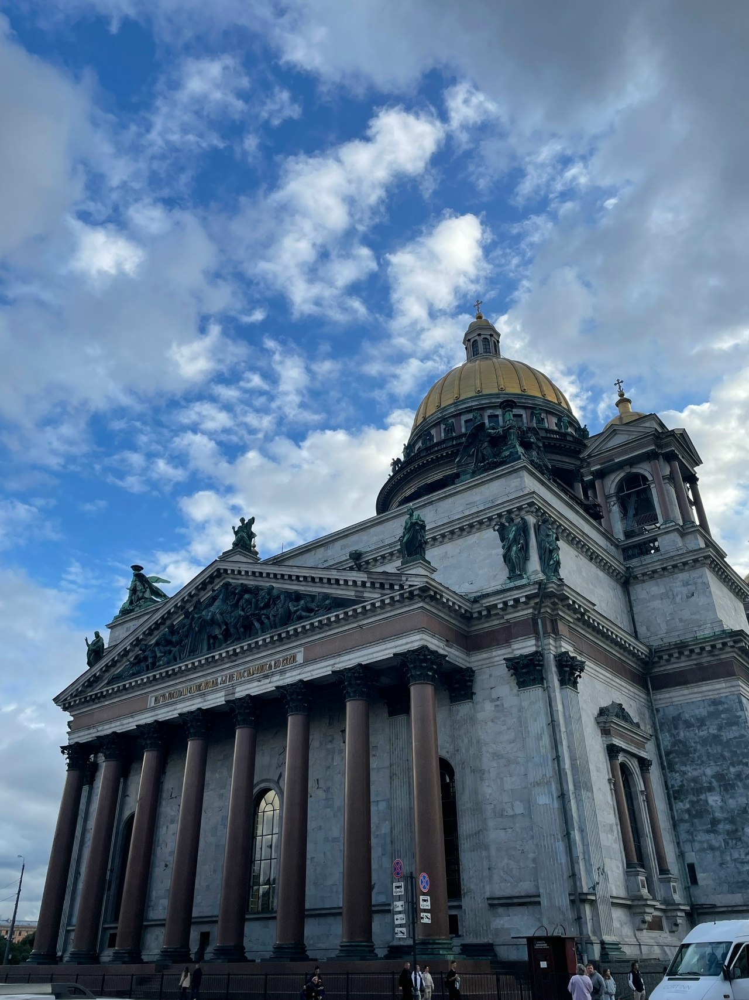

Тот самый день
Питер, Москва... Это было отличное путешествие. Я была очень удивлена, что несмотря на то, что мы не так много общались, ты позвал меня с собой, что ты позволил разделить важные события вместе с тобой. Я благодарна тебе за это. Ты познакомил меня с прекрасными людьми. Мне понравились твои друзья по игре, все они забавные и интересные люди, была очень приятная компания. Я надеюсь , что ты насладился этой встречей и спустя много лет ты будешь это вспоминать с приятными чувствами. А Питер- город , который я хотела посетить еще раз в этом году летом, но мои планы поменялись и я не смогла посетить его с Дашкой, но посетила его с тобой, чему я очень рада, я надеюсь , что мы съездим туда еще не один раз. Мне была приятна твоя забота, твое внимание каждый день, каждую минуту. Ты был всегда рядом и я чувствовала, что я не одна. Спасибо за твою заботу , когда мне стало плохо после нашей тусы ахахха, когда стало плохо в такси и потом в дальнейшем. Ты позаботился о моих вещах перед отъездом, собрал их, накормил еще меня). В общем хочу сказать, все , что ты делаешь, не остается без внимания и благодарности. Я очень рада , что встретила тебя, такого же кто может говорить о своих чувствах, кто умеет проявлять их, кто здраво мыслит, с кем мне комфортно, с кем я чувствую какое-то спокойствие в душе и тепло, такого чувства я еще не испытывала) Что-то я больше написала про чувства чем про города хахах), но все это является частью поездки. Сами города мне понравились, Питеру далась еще одна попытка, чтоб я его поняла, тк после первой поездки на выпускной туда у меня остались непонятные чувства и я поняла , что мне надо еще раз съездить чтоб лучше его узнать.В Москве мне тоже было комфортно. А еще ты дал возможность человеку, который хочет путешествовать и посетить разные города и страны, насладиться всеми этими моментами. Ты дал очень большие воспоминания мне, тк путешествия играют не малую роль для меня и это одно из моих желаний, побывать в разных местах мира) Эти поездки были очень атмосферными и позволили нам узнать друг друга лучше и хорошо провести время. И вообще , это наши первые прекрасные поездки куда-либо, это было очень классно) Не забуду самую первую встречу с ребятами рано утром, как гуляли по Питеру и ты решил все же со мной сфотографироваться пхпх),как я смотрела с Наташей мультик, как я наблюдала, когда ты пьяненький отжигал со всеми в доме ,а я наблюдала, наслаждалась этим моментом и пила винишко в сторонке), как мы танцевали медлячок, как вы с Лехой поехали на одном самокате за продуктами, как я укладывала тебя спать, оооой это будто прямо отдельная история у меня в голове ххаха(как я подгатавливала все чтоб тебе не мешали спать и принесла минералку тебе , чтобы ты попил, когда проснешься ). Вообщем получились насыщенные дни, Питер оставил о себе хорошие воспоминания. Для наших отношений это тоже незабываемые дни)


